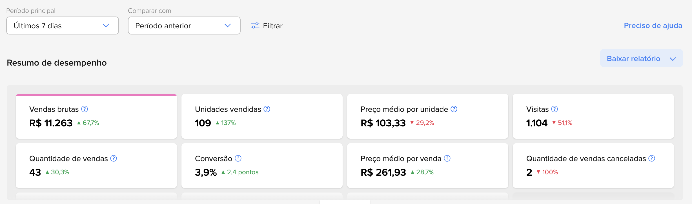
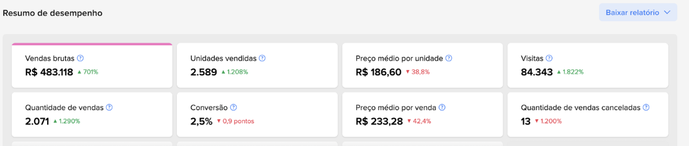
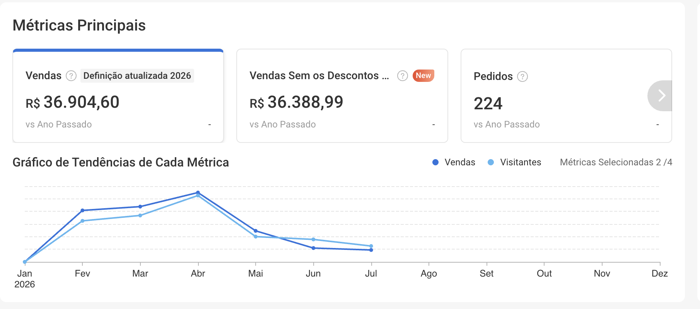

CONSULTORIA EM MARKETPLACE PARA LOJAS DE MATERIAIS DE CONSTRUÇÃO, FERRAGISTAS QUE QUEREM VENDER BEM NO MERCADO LIVRE E NA SHOPEE.
Coloque sua loja pra escalar seus resultados no Mercado Livre e na Shopee.
A Consultoria em Marketplace da Tracto estrutura catálogo, ficha de produto e precificação pra sua loja aparecer bem e vender mais, sem tentativa e erro.
Aplique pra Consultoria em Marketplace
Vagas limitadas de diagnóstico por região este mês.
+30lojas atendidas
R$5Mgerados em vendas pros clientes
100%focado em marketplace
Mais de 30 lojas de materiais de construção e ferragistas confiam na nossa metodologia
Resultados reais de lojas atendidas pela Tracto
Prints direto do painel de desempenho do Mercado Livre e da Shopee. Sem simulação, sem número inventado.
Mercado Livre · Últimos 7 dias vs. período anterior

Mercado Livre · Resumo de desempenho

Shopee · Métricas principais

Dados reais dos painéis de vendedor de lojas atendidas pela Tracto.
Todo dia, alguém compra o que você vende. A pergunta é: de quem?
Enquanto sua loja fica de fora, esse tanto de gente compra de outra loja, todo santo dia.
O que sua loja precisa agora é estar preparada: catálogo certo, ficha de produto certa e presença no marketplace certo pro seu nicho.
E a maioria das lojas de material de construção e ferragistas ainda não vende em marketplace nenhum, ou seja, a sua concorrência é muito menor do que você imagina.
Esse é o momento certo pra aparecer onde o cliente já está comprando, com o direcionamento de quem já estruturou dezenas de lojas nos marketplaces.
Dados públicos de mercado (Mercado Livre e e-commerce Brasil). Não são números da Tracto.
O que nossos clientes dizem sobre a Tracto
Quem já aplicou a metodologia da Tracto sabe o que muda no fluxo de clientes e no faturamento da loja.
Pra Casa FerragistaDepoimento real sobre a Consultoria em Marketplace
A Tracto nasceu batendo em porta
A Tracto começou do jeito mais difícil possível, vendendo de porta em porta e ouvindo não atrás de não, até aprender na prática o que realmente trava a venda de quem trabalha com material de construção, ferragem, peça e ferramenta.
Foi ali, batendo perna e ouvindo direto do dono da loja o que não funcionava, que a gente entendeu que o problema quase nunca é falta de produto bom. É não aparecer na hora que o cliente procura, e não converter quando aparece.
Hoje aplicamos esse mesmo aprendizado prático em marketplace, sempre com um pé no chão de quem vende de verdade.
+30lojas atendidas
R$5Mgerados em vendas pros nossos clientes
LUIZ BRITO
Fundador da Tracto
Perfil analítico e comprometido com resultado, com domínio de gestão e copywriting. Cuida do comercial e do marketplace por trás dos resultados dos clientes.
ISAQUE VICTOR
Cofundador da Tracto
Responsável pela operação da Tracto. Cuida dos processos pra cada loja vender mais sem perder o controle do dia a dia.
Uma metodologia, quatro movimentos
Nada de catálogo genérico. Cada loja tem um nicho e um mix de produto diferente.
01
Diagnóstico
Mapeamos seu catálogo e como sua loja aparece, ou não aparece, hoje no Mercado Livre e na Shopee.
02
Estratégia
Definimos o marketplace certo pro seu nicho e o posicionamento de cada produto pra competir em relevância, não só em preço.
03
Implementação
Organizamos catálogo, ficha de produto e precificação pra sua loja aparecer bem desde o primeiro dia.
04
Escala
Acompanhamento contínuo de ranqueamento, estoque e performance, ajustando o que for preciso pra vender mais mês a mês.
A Tracto estrutura o marketplace da sua loja com base na sua necessidade
Estruturação de catálogo
Organizamos seu catálogo pra cada produto aparecer na categoria e no nicho certos.
Ficha de produto otimizada
Título, descrição e imagem pensados pra fazer parafuso, peça e material parecer a escolha óbvia.
Precificação e ranqueamento
Estratégia de preço e reputação pra competir em relevância, não só no desconto.
Escolha do marketplace certo
Mercado Livre ou Shopee: mostramos onde vale investir primeiro pro seu nicho.
Gestão de estoque e Full
Organização de estoque e avaliação se faz sentido operar pelo Full do marketplace.
Relatório de performance
Clareza de quanto cada produto vende, e onde está o maior potencial parado.
O que você recebe no diagnóstico
Sem enrolação. Um raio-x claro de onde sua loja está deixando venda na mesa, e o que fazer pra destravar.
01
Raio-x do seu potencial nos marketplaces
Análise do seu catálogo pra mostrar onde ele tem mais chance de vender no Mercado Livre ou na Shopee, mesmo que você nunca tenha anunciado lá.
02
Prioridade de marketplace pro seu nicho
Nem todo marketplace faz sentido pro seu segmento. Mostramos onde vale investir primeiro.
03
Orientação de ficha de produto
Como estruturar título, descrição e imagem pra já nascer certo, sem repetir os erros mais comuns de quem está começando agora.
04
Estratégia de precificação e ranqueamento
O que está travando seu produto de aparecer bem na busca, e o que corrigir primeiro.
05
Plano claro dos próximos passos
Você sai da conversa sabendo exatamente o que fazer, com ou sem a Tracto.
Um investimento sob medida pro momento da sua loja
Nada de pacote fechado de prateleira. Escopo de catálogo e prioridade de marketplace definidos com base no seu diagnóstico e no seu nicho.
De que lado você quer estar?
Sem estruturar seu marketplace
✕Cadastra os produtos mas não faz nenhuma venda
✕Queima verba vendendo no prejuízo todo mês
✕Não sabe o que fazer com estoque parado
✕Ficha de produto genérica, sem nenhuma estratégia
✕Não consegue escalar as vendas por falta de planejamento
✕Não sabe como usar o Product Ads pra vender mais
Com a Consultoria em Marketplace da Tracto
✓Catálogo estruturado pra realmente vender
✓Precificação certa, com margem de lucro saudável
✓Giro de estoque sob controle, sem produto parado
✓Ficha de produto pensada pra converter
✓Plano claro pra escalar as vendas mês a mês
✓Estratégia de Product Ads pra vender mais
Receba um time exclusivo
A Tracto estrutura o marketplace da sua loja com base na sua necessidade
Tenha um time de especialistas ao seu lado ou terceirize totalmente a gestão do seu marketplace com a Tracto. Sem dor de cabeça com contratação, gestão de equipe, riscos trabalhistas ou burocracia, você foca na sua loja, e a gente foca em fazer ela vender mais.
Perguntas Frequentes
Ficou com alguma dúvida? Talvez ela esteja aqui
Cuidamos 100% da estruturação da sua loja nos marketplaces, do catálogo à ficha de produto, pra você vender bem no Mercado Livre e na Shopee.
Não. Muita loja que aplica ainda vende só no balcão. A gente estrutura a presença online do zero, priorizando o marketplace certo pro seu nicho.
Varia com o ponto de partida da sua loja, mas você não fica no escuro: na reunião de diagnóstico já recebe uma estimativa realista baseada no seu catálogo, antes de decidir se segue com a gente.
Atende. O diagnóstico é feito pro tamanho e pro momento da sua loja, não é pacote fechado igual pra todo mundo. Boa parte de quem aplica ainda vende só no balcão.
Muda mais do que parece. Título, descrição e imagem certos são o que decide se o clique vai pro seu anúncio ou pro do concorrente ao lado, mesmo vendendo o mesmo produto.
Não é obrigatório. Avaliamos junto com você se faz sentido pro seu estoque e pro seu momento, sem empurrar solução padrão.
Não. A Tracto cuida da parte técnica da estruturação. Sua equipe continua focada em atender e vender.